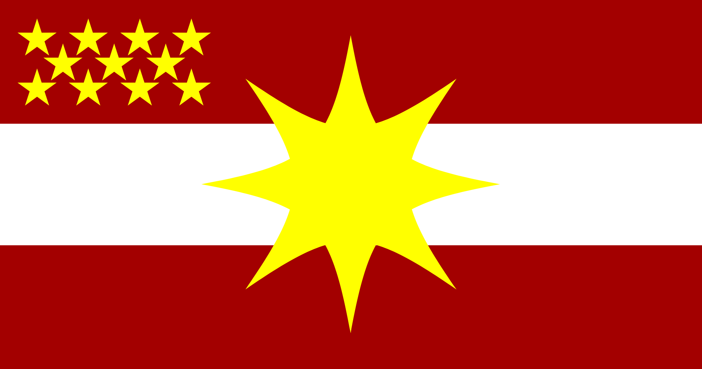
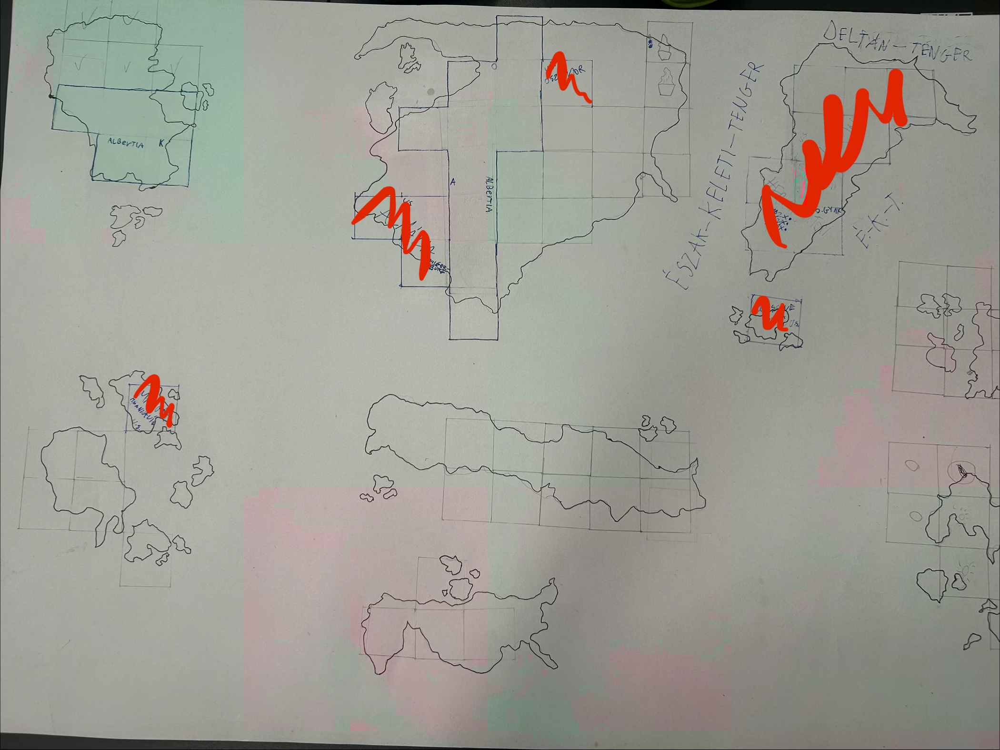

Államforma: szövetségi köztársaság
Lakosság: -
Arany: -
Pénznem: deltán dollár ($, EDD)
Vallás: 48% keresztény, 20% deltavár, 32% egyéb
Terület: 2
Főváros: Deltauri
Államok: 1
Elfoglalt országok: -
Elfoglalt városok: -
Provinciák: -
Leírás: A Deltán Egyesült Államok egy szövetségi alkotmányos köztársaság, elnöki rendszerrel.


A deltán népek évezredek óta külön éltek a többi néptől. Soha nem volt egy nagy, közös vezetőjük. Területek szerint voltak külön országokban, de 132-ben az egyik ország királya egyesülést szervezett. Minden deltán ember szavazhatott mindenhonnan. Kivétel nélkül mindenki támogatta az ötletet, és még 132 telén megalakult a Deltán Egyesült Államok.
207: Az ország csatlakozott a Háromszög Szövetséghez.
Täkkon főváros: Deltauri, létrejövetel: 199, terület: 2
Elnök: Henry Wilson 82,6%, PCA
Képviselőház:
112 - 🔵 Progressive-Conservative Alliance (PCA)
34 - 🟠 People’s Renewal Party (PRP)
4 - 🟣 Delta Populist Movement (DPM)
Szenátus:
37 - 🔵 Progressive-Conservative Alliance (PCA) Täkkon 100%
11 - 🟠 People’s Renewal Party (PRP) Täkkon 100%
2 - 🟣 Delta Populist Movement (DPM) Täkkon 100%